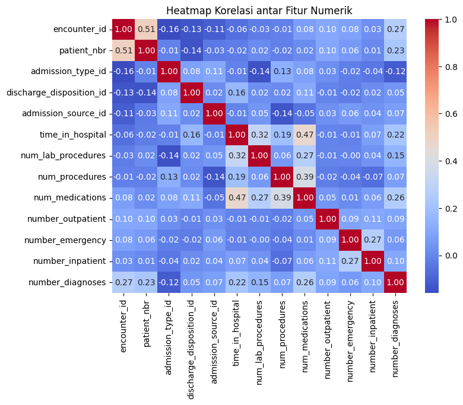
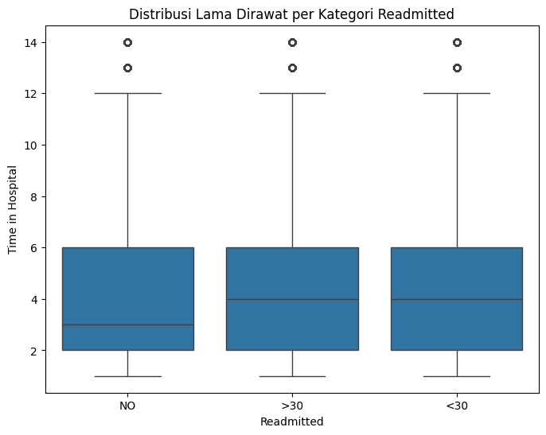
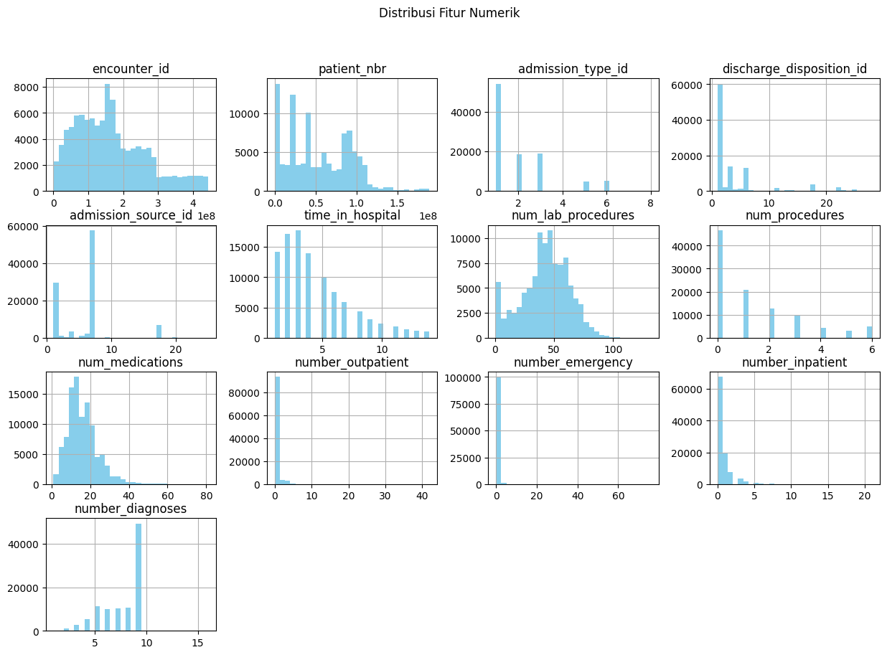

Pra Uas#
Mengambil Data#
pip install ucimlrepo
Collecting ucimlrepo
Downloading ucimlrepo-0.0.7-py3-none-any.whl.metadata (5.5 kB)
Requirement already satisfied: pandas>=1.0.0 in /home/codespace/.local/lib/python3.12/site-packages (from ucimlrepo) (2.2.3)
Requirement already satisfied: certifi>=2020.12.5 in /home/codespace/.local/lib/python3.12/site-packages (from ucimlrepo) (2024.8.30)
Requirement already satisfied: numpy>=1.26.0 in /home/codespace/.local/lib/python3.12/site-packages (from pandas>=1.0.0->ucimlrepo) (2.2.0)
Requirement already satisfied: python-dateutil>=2.8.2 in /home/codespace/.local/lib/python3.12/site-packages (from pandas>=1.0.0->ucimlrepo) (2.9.0.post0)
Requirement already satisfied: pytz>=2020.1 in /home/codespace/.local/lib/python3.12/site-packages (from pandas>=1.0.0->ucimlrepo) (2024.2)
Requirement already satisfied: tzdata>=2022.7 in /home/codespace/.local/lib/python3.12/site-packages (from pandas>=1.0.0->ucimlrepo) (2024.2)
Requirement already satisfied: six>=1.5 in /home/codespace/.local/lib/python3.12/site-packages (from python-dateutil>=2.8.2->pandas>=1.0.0->ucimlrepo) (1.17.0)
Downloading ucimlrepo-0.0.7-py3-none-any.whl (8.0 kB)
Installing collected packages: ucimlrepo
Successfully installed ucimlrepo-0.0.7
[notice] A new release of pip is available: 24.3.1 -> 25.1.1
[notice] To update, run: python3 -m pip install --upgrade pip
Note: you may need to restart the kernel to use updated packages.
from ucimlrepo import fetch_ucirepo
from google.colab import files
# fetch dataset
diabetes_130_us_hospitals_for_years_1999_2008 = fetch_ucirepo(id=296)
# data (as pandas dataframes)
X = diabetes_130_us_hospitals_for_years_1999_2008.data.features
y = diabetes_130_us_hospitals_for_years_1999_2008.data.targets
## data (as pandas dataframes)
data = diabetes_130_us_hospitals_for_years_1999_2008.data.original
# menyimpan hasil komputasi ke dalam csv
data.to_csv("diabetes_130_us_hospitals_for_years_1999_2008.csv", index=True)
print(data.info()) #untuk menampilkan info fitur-fitur yang ada di tabel
print(data.head()) #untuk menampilkan 5 baris pertama
files.download("diabetes_130_us_hospitals_for_years_1999_2008.csv")
---------------------------------------------------------------------------
ModuleNotFoundError Traceback (most recent call last)
Cell In[2], line 2
1 from ucimlrepo import fetch_ucirepo
----> 2 from google.colab import files
4 # fetch dataset
5 diabetes_130_us_hospitals_for_years_1999_2008 = fetch_ucirepo(id=296)
ModuleNotFoundError: No module named 'google'
Explorasi Data#
display(data) #display dataset
| encounter_id | patient_nbr | race | gender | age | weight | admission_type_id | discharge_disposition_id | admission_source_id | time_in_hospital | ... | citoglipton | insulin | glyburide-metformin | glipizide-metformin | glimepiride-pioglitazone | metformin-rosiglitazone | metformin-pioglitazone | change | diabetesMed | readmitted | |
|---|---|---|---|---|---|---|---|---|---|---|---|---|---|---|---|---|---|---|---|---|---|
| 0 | 2278392 | 8222157 | Caucasian | Female | [0-10) | NaN | 6 | 25 | 1 | 1 | ... | No | No | No | No | No | No | No | No | No | NO |
| 1 | 149190 | 55629189 | Caucasian | Female | [10-20) | NaN | 1 | 1 | 7 | 3 | ... | No | Up | No | No | No | No | No | Ch | Yes | >30 |
| 2 | 64410 | 86047875 | AfricanAmerican | Female | [20-30) | NaN | 1 | 1 | 7 | 2 | ... | No | No | No | No | No | No | No | No | Yes | NO |
| 3 | 500364 | 82442376 | Caucasian | Male | [30-40) | NaN | 1 | 1 | 7 | 2 | ... | No | Up | No | No | No | No | No | Ch | Yes | NO |
| 4 | 16680 | 42519267 | Caucasian | Male | [40-50) | NaN | 1 | 1 | 7 | 1 | ... | No | Steady | No | No | No | No | No | Ch | Yes | NO |
| ... | ... | ... | ... | ... | ... | ... | ... | ... | ... | ... | ... | ... | ... | ... | ... | ... | ... | ... | ... | ... | ... |
| 101761 | 443847548 | 100162476 | AfricanAmerican | Male | [70-80) | NaN | 1 | 3 | 7 | 3 | ... | No | Down | No | No | No | No | No | Ch | Yes | >30 |
| 101762 | 443847782 | 74694222 | AfricanAmerican | Female | [80-90) | NaN | 1 | 4 | 5 | 5 | ... | No | Steady | No | No | No | No | No | No | Yes | NO |
| 101763 | 443854148 | 41088789 | Caucasian | Male | [70-80) | NaN | 1 | 1 | 7 | 1 | ... | No | Down | No | No | No | No | No | Ch | Yes | NO |
| 101764 | 443857166 | 31693671 | Caucasian | Female | [80-90) | NaN | 2 | 3 | 7 | 10 | ... | No | Up | No | No | No | No | No | Ch | Yes | NO |
| 101765 | 443867222 | 175429310 | Caucasian | Male | [70-80) | NaN | 1 | 1 | 7 | 6 | ... | No | No | No | No | No | No | No | No | No | NO |
101766 rows × 50 columns
data.shape #untuk mengetahui bentuk dataset(baris & kolom)
(101766, 50)
data.columns #untuk mengetahui kolom-kolom yang ada pada dataset
Index(['encounter_id', 'patient_nbr', 'race', 'gender', 'age', 'weight',
'admission_type_id', 'discharge_disposition_id', 'admission_source_id',
'time_in_hospital', 'payer_code', 'medical_specialty',
'num_lab_procedures', 'num_procedures', 'num_medications',
'number_outpatient', 'number_emergency', 'number_inpatient', 'diag_1',
'diag_2', 'diag_3', 'number_diagnoses', 'max_glu_serum', 'A1Cresult',
'metformin', 'repaglinide', 'nateglinide', 'chlorpropamide',
'glimepiride', 'acetohexamide', 'glipizide', 'glyburide', 'tolbutamide',
'pioglitazone', 'rosiglitazone', 'acarbose', 'miglitol', 'troglitazone',
'tolazamide', 'examide', 'citoglipton', 'insulin',
'glyburide-metformin', 'glipizide-metformin',
'glimepiride-pioglitazone', 'metformin-rosiglitazone',
'metformin-pioglitazone', 'change', 'diabetesMed', 'readmitted'],
dtype='object')
data.dtypes #untuk mengetahui tipe data dari masing-masing kolom
| 0 | |
|---|---|
| encounter_id | int64 |
| patient_nbr | int64 |
| race | object |
| gender | object |
| age | object |
| weight | object |
| admission_type_id | int64 |
| discharge_disposition_id | int64 |
| admission_source_id | int64 |
| time_in_hospital | int64 |
| payer_code | object |
| medical_specialty | object |
| num_lab_procedures | int64 |
| num_procedures | int64 |
| num_medications | int64 |
| number_outpatient | int64 |
| number_emergency | int64 |
| number_inpatient | int64 |
| diag_1 | object |
| diag_2 | object |
| diag_3 | object |
| number_diagnoses | int64 |
| max_glu_serum | object |
| A1Cresult | object |
| metformin | object |
| repaglinide | object |
| nateglinide | object |
| chlorpropamide | object |
| glimepiride | object |
| acetohexamide | object |
| glipizide | object |
| glyburide | object |
| tolbutamide | object |
| pioglitazone | object |
| rosiglitazone | object |
| acarbose | object |
| miglitol | object |
| troglitazone | object |
| tolazamide | object |
| examide | object |
| citoglipton | object |
| insulin | object |
| glyburide-metformin | object |
| glipizide-metformin | object |
| glimepiride-pioglitazone | object |
| metformin-rosiglitazone | object |
| metformin-pioglitazone | object |
| change | object |
| diabetesMed | object |
| readmitted | object |
Mencari Missing Value dan Outlier
import pandas as pd
import numpy as np
import matplotlib.pyplot as plt
import seaborn as sns
# Load dataset dari file CSV (kalau sudah disimpan sebelumnya)
data = pd.read_csv("diabetes_130_us_hospitals_for_years_1999_2008.csv", index_col=0)
# 1. Menampilkan informasi umum dataset
print("Info DataFrame:")
print(data.info())
# 2. Cek jumlah missing values per kolom
print("\nMissing Values per Kolom:")
print(data.isnull().sum())
# 3. Presentase missing values
missing_percent = data.isnull().mean() * 100
print("\nPresentase Missing Values:")
print(missing_percent[missing_percent > 0].sort_values(ascending=False))
# 4. Cek apakah ada duplikat
print("\nJumlah Data Duplikat:")
print(data.duplicated().sum())
# 5. Ringkasan statistik deskriptif untuk fitur numerik
print("\nStatistik Deskriptif:")
print(data.describe())
# 6. Visualisasi boxplot untuk mendeteksi outlier di fitur numerik
numeric_cols = data.select_dtypes(include=np.number).columns.tolist()
# Boxplot untuk semua fitur numerik
plt.figure(figsize=(8, 6))
data[numeric_cols].boxplot(rot=90)
plt.title("Boxplot Fitur Numerik (Deteksi Outlier)")
plt.show()
# 7. Deteksi outlier menggunakan IQR (contoh untuk satu kolom numerik)
def detect_outliers_iqr(column):
Q1 = data[column].quantile(0.25)
Q3 = data[column].quantile(0.75)
IQR = Q3 - Q1
outliers = data[(data[column] < (Q1 - 1.5 * IQR)) | (data[column] > (Q3 + 1.5 * IQR))]
print(f"\nJumlah outlier di kolom '{column}': {len(outliers)}")
# Contoh: cek outlier pada fitur 'time_in_hospital' (jika ada)
if 'time_in_hospital' in data.columns:
detect_outliers_iqr('time_in_hospital')
# 8. Heatmap korelasi dan missing value
plt.figure(figsize=(8, 6))
sns.heatmap(data.isnull(), cbar=False, cmap="viridis")
plt.title("Heatmap Missing Values")
plt.show()
# Korelasi numerik
plt.figure(figsize=(8, 6))
sns.heatmap(data[numeric_cols].corr(), annot=True, fmt=".2f", cmap='coolwarm')
plt.title("Heatmap Korelasi Fitur Numerik")
plt.show()
/tmp/ipython-input-16-2270431918.py:7: DtypeWarning: Columns (11) have mixed types. Specify dtype option on import or set low_memory=False.
data = pd.read_csv("diabetes_130_us_hospitals_for_years_1999_2008.csv", index_col=0)
Info DataFrame:
<class 'pandas.core.frame.DataFrame'>
Index: 101766 entries, 0 to 101765
Data columns (total 50 columns):
# Column Non-Null Count Dtype
--- ------ -------------- -----
0 encounter_id 101766 non-null int64
1 patient_nbr 101766 non-null int64
2 race 99493 non-null object
3 gender 101766 non-null object
4 age 101766 non-null object
5 weight 3197 non-null object
6 admission_type_id 101766 non-null int64
7 discharge_disposition_id 101766 non-null int64
8 admission_source_id 101766 non-null int64
9 time_in_hospital 101766 non-null int64
10 payer_code 61510 non-null object
11 medical_specialty 51817 non-null object
12 num_lab_procedures 101766 non-null int64
13 num_procedures 101766 non-null int64
14 num_medications 101766 non-null int64
15 number_outpatient 101766 non-null int64
16 number_emergency 101766 non-null int64
17 number_inpatient 101766 non-null int64
18 diag_1 101745 non-null object
19 diag_2 101408 non-null object
20 diag_3 100343 non-null object
21 number_diagnoses 101766 non-null int64
22 max_glu_serum 5346 non-null object
23 A1Cresult 17018 non-null object
24 metformin 101766 non-null object
25 repaglinide 101766 non-null object
26 nateglinide 101766 non-null object
27 chlorpropamide 101766 non-null object
28 glimepiride 101766 non-null object
29 acetohexamide 101766 non-null object
30 glipizide 101766 non-null object
31 glyburide 101766 non-null object
32 tolbutamide 101766 non-null object
33 pioglitazone 101766 non-null object
34 rosiglitazone 101766 non-null object
35 acarbose 101766 non-null object
36 miglitol 101766 non-null object
37 troglitazone 101766 non-null object
38 tolazamide 101766 non-null object
39 examide 101766 non-null object
40 citoglipton 101766 non-null object
41 insulin 101766 non-null object
42 glyburide-metformin 101766 non-null object
43 glipizide-metformin 101766 non-null object
44 glimepiride-pioglitazone 101766 non-null object
45 metformin-rosiglitazone 101766 non-null object
46 metformin-pioglitazone 101766 non-null object
47 change 101766 non-null object
48 diabetesMed 101766 non-null object
49 readmitted 101766 non-null object
dtypes: int64(13), object(37)
memory usage: 39.6+ MB
None
Missing Values per Kolom:
encounter_id 0
patient_nbr 0
race 2273
gender 0
age 0
weight 98569
admission_type_id 0
discharge_disposition_id 0
admission_source_id 0
time_in_hospital 0
payer_code 40256
medical_specialty 49949
num_lab_procedures 0
num_procedures 0
num_medications 0
number_outpatient 0
number_emergency 0
number_inpatient 0
diag_1 21
diag_2 358
diag_3 1423
number_diagnoses 0
max_glu_serum 96420
A1Cresult 84748
metformin 0
repaglinide 0
nateglinide 0
chlorpropamide 0
glimepiride 0
acetohexamide 0
glipizide 0
glyburide 0
tolbutamide 0
pioglitazone 0
rosiglitazone 0
acarbose 0
miglitol 0
troglitazone 0
tolazamide 0
examide 0
citoglipton 0
insulin 0
glyburide-metformin 0
glipizide-metformin 0
glimepiride-pioglitazone 0
metformin-rosiglitazone 0
metformin-pioglitazone 0
change 0
diabetesMed 0
readmitted 0
dtype: int64
Presentase Missing Values:
weight 96.858479
max_glu_serum 94.746772
A1Cresult 83.277322
medical_specialty 49.082208
payer_code 39.557416
race 2.233555
diag_3 1.398306
diag_2 0.351787
diag_1 0.020636
dtype: float64
Jumlah Data Duplikat:
0
Statistik Deskriptif:
encounter_id patient_nbr admission_type_id \
count 1.017660e+05 1.017660e+05 101766.000000
mean 1.652016e+08 5.433040e+07 2.024006
std 1.026403e+08 3.869636e+07 1.445403
min 1.252200e+04 1.350000e+02 1.000000
25% 8.496119e+07 2.341322e+07 1.000000
50% 1.523890e+08 4.550514e+07 1.000000
75% 2.302709e+08 8.754595e+07 3.000000
max 4.438672e+08 1.895026e+08 8.000000
discharge_disposition_id admission_source_id time_in_hospital \
count 101766.000000 101766.000000 101766.000000
mean 3.715642 5.754437 4.395987
std 5.280166 4.064081 2.985108
min 1.000000 1.000000 1.000000
25% 1.000000 1.000000 2.000000
50% 1.000000 7.000000 4.000000
75% 4.000000 7.000000 6.000000
max 28.000000 25.000000 14.000000
num_lab_procedures num_procedures num_medications number_outpatient \
count 101766.000000 101766.000000 101766.000000 101766.000000
mean 43.095641 1.339730 16.021844 0.369357
std 19.674362 1.705807 8.127566 1.267265
min 1.000000 0.000000 1.000000 0.000000
25% 31.000000 0.000000 10.000000 0.000000
50% 44.000000 1.000000 15.000000 0.000000
75% 57.000000 2.000000 20.000000 0.000000
max 132.000000 6.000000 81.000000 42.000000
number_emergency number_inpatient number_diagnoses
count 101766.000000 101766.000000 101766.000000
mean 0.197836 0.635566 7.422607
std 0.930472 1.262863 1.933600
min 0.000000 0.000000 1.000000
25% 0.000000 0.000000 6.000000
50% 0.000000 0.000000 8.000000
75% 0.000000 1.000000 9.000000
max 76.000000 21.000000 16.000000
Jumlah outlier di kolom 'time_in_hospital': 2252
Visualisasi Data
import seaborn as sns
import matplotlib.pyplot as plt
import numpy as np
# Ambil hanya kolom numerik
numeric_data = data.select_dtypes(include=np.number)
plt.figure(figsize=(8, 6))
sns.heatmap(numeric_data.corr(), annot=True, fmt='.2f', cmap='coolwarm')
plt.title('Heatmap Korelasi antar Fitur Numerik')
plt.show()

plt.figure(figsize=(6, 4))
sns.countplot(x='readmitted', data=data, palette='viridis')
plt.title('Distribusi Label Readmitted')
plt.xlabel('Readmitted')
plt.ylabel('Jumlah')
plt.show()
/tmp/ipython-input-28-3872530656.py:2: FutureWarning:
Passing `palette` without assigning `hue` is deprecated and will be removed in v0.14.0. Assign the `x` variable to `hue` and set `legend=False` for the same effect.
sns.countplot(x='readmitted', data=data, palette='viridis')
plt.figure(figsize=(8, 6))
sns.boxplot(x='readmitted', y='time_in_hospital', data=data)
plt.title('Distribusi Lama Dirawat per Kategori Readmitted')
plt.xlabel('Readmitted')
plt.ylabel('Time in Hospital')
plt.show()

data.select_dtypes(include=np.number).hist(bins=30, figsize=(15, 10), color='skyblue')
plt.suptitle('Distribusi Fitur Numerik')
plt.show()
